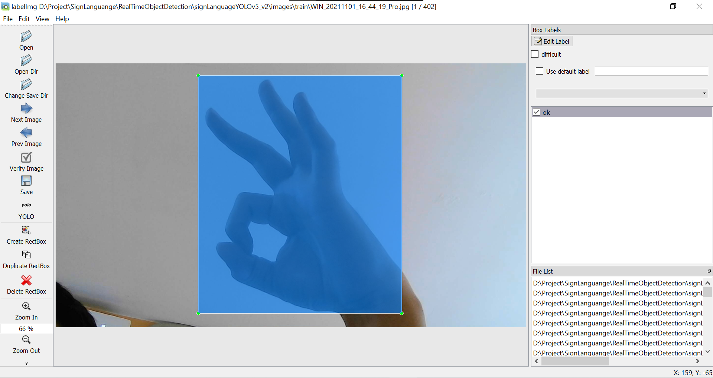

Sign Language Detection using YOLOv5
Abstract
Human-Computer Interaction (HCI) nowadays mostly uses physical contact, such as people using the mouse to choose something in an application. In the meanwhile, there are certain problems that people will face if using conventional HCI. For example, when people need to hit submit button in an online form with the mouse, but their hands are dirty or wet this could cause the mouse to become dirty or maybe broken. In this research, the authors try to overcome some of the problems while people use conventional HCI by using the Computer Vision method. This research focuses on creating and evaluating the object detection model for classifying hand symbol using YOLO fifth version. The hand gesture classes that were made in this research are 'ok', 'cancel', 'previous', 'next', and 'confirm'. The architecture of YOLO fifth version which is used in this research is yolov5m. After all, the performance of the models for classifying hand symbols is 80% for accuracy, 95% for precision, 84% for recall, and 89% for F1 score.
YOLO Algorithm
YOLO is one of the most popular computer vision algorithms to detect and classify objects in an image or video. The name itself stands for You Only Look Once, and YOLO is categorized as Single-Shot Detector (SSD) Algorithm. In therm of speed inference, the SSD algorithm outperforms other algorithms like R-CNN, Faster R-CNN, etc. However, the drawback is the accuracy is not good as R-CNN. Joseph Redmon developed the YOLO algorithm, which was popular, starting with YOLO Version 3, and uses the darknet framework; the later version of YOLO Version 4 increased the speed and accuracy. Later on, YOLO Version 5 was developed using PyTorch by Glenn Jocher, and this version is used in this algorithm.
YOLO has a working method of dividing an image into several small pieces: S × S grids. Each grid will be responsible for the centre point of the objects in each grid. The algorithm will give a bounding box and the confidence value of the detected object class in the grid. A bounding box consists of Width, Height, Class, and the bounding box centre (bx, by). When detecting an object, the confidence value is the same as the Intersection Over Union (IOU) obtained from the calculation between the bounding box predictions and ground truth.
This experiment uses the YOLO Version 5, specifically yolov5m. The architecture of yolov5m consists of backbone, neck, and head which could be visualized as follow:
Model Creation
Cancel

Confirm
Previous
Ok
Next
 The images itself was captured from the laptop's camera, then processed using labelimg and saved as YOLO format data consisting of x, y, w, and h of the object. The labelling process was done by creating a boundary box for each image, and the size should be as fit as possible to the object, so the background won't be seen too much.
Train & Evaluation Phase
- Image size = 416 px
- Batch Size = 4
- Epochs = 300
- Cache = True
- Optimizer = Stochastic Gradient Descent (SGD)
- lr0 = 0.01
- lrf = 0.1
- momentum = 0.937
- weight_decay = 0.0005
- warmup_epochs = 3.0
- warmup_momentum = 0.8
- warmup_bias_lr = 0.1
- box = 0.05
- cls = 0.5
- cls_pw = 1.0
- obj = 1.0
- obj_pw = 1.0
- iou_t = 0.2
- anchor_t = 4.0
- fl_gamma = 0.0
- hsv_h = 0.015
- hsv_s = 0.7
- hsv_v = 0.4
- degrees = 0.0
- translate = 0.1
- scale = 0.5
- shear = 0.0
- perspective = 0.0
- flipud = 0.0
- fliplr = 0.5
- mosaic = 1.0
- mixup = 0.0
- copy_paste = 0.0
Experiments
Contributing Organizations & People
This research was successfully conducted with the help of some people. I would like to thank:
- Dr. Indar Sugiarto as my supervisor and the co-author.
- Fakultas Teknologi Industri as well as Lembaga Penelitian dan Pengabdian Masyarakat of Petra Christian University for supporting our work through the special research grant No.09/HBK-PENELITIAN/LPPM-UKP/XI/2022.
- The authors also acknowledge the financial support from the Ministry of Education, Culture, Research, and Technology of Indonesia under the research grant No. 02/AMD/SP2H/PT-L/LL7/2022.
- and other people who I couldn't mention one by one.